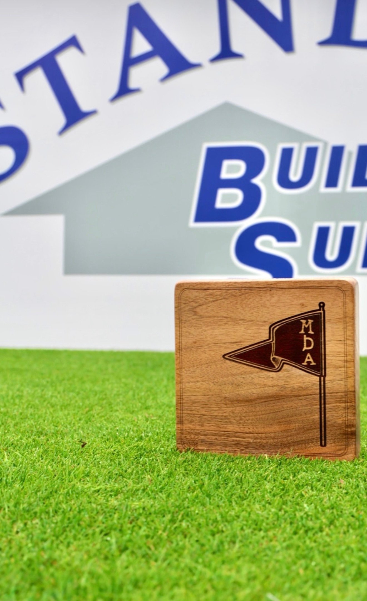

Tee markers
Designed and built for your tee boxes. Each set commissioned for a specific course.

Designed for a specific course
Every set of tee markers is designed for a specific course. We work with superintendents, general managers, and course architects to develop markers that reflect the character and standards of their property. Each piece is hand-finished in our Vancouver studio.
Our tee markers are CNC-fabricated from locally sourced hardwoods and finished by hand. Material options include natural timber finishes, charred wood treatments, and mixed-media combinations with metal inlay or engraved detailing. Every set is built to hold up across seasons of play, sun exposure, and course maintenance routines.


Built around your course identity
Customization is central to every commission. Shape, profile, material finish, inlay details, and engraved branding are all developed in collaboration with your team. Whether your course calls for a classic hexagonal form, a low-profile rectangular silhouette, or something entirely original, each marker is drawn and built to suit your tee boxes and course identity.
Tee marker commissions are designed for private clubs and resort courses looking to elevate the on-course experience. They are particularly suited to properties undergoing renovation, rebranding, or preparing for tournaments and membership events where course presentation matters.

Designed for the occasion
Not every commission is a full course set. For a member invitational at Marine Drive Golf Club in Vancouver, we made 40 English walnut markers, each one engraved with the club's pennant flag and event monogram. Same materials, same studio process, built around a single event.
Tournament and event commissions fit naturally into the calendar of member invitationals, club championships, and course openings. We work with the same precision on a run of 40 as on a full tee program.

The process begins with a conversation about your course, your brand, and the practical requirements of your tee boxes. From there, we develop initial concepts, refine materials and detailing, and move into production. Most commissions include a full set of markers across all tee positions. We work closely with your team throughout to ensure the finished product meets your standards.
Every piece leaves the studio inspected and finished to specification. We ship across North America and internationally.
Interested in commissioning a set for your course?
Email us to start →